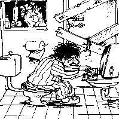

АО НПЦ ЭЛВИС (03/2025 – 12/2025) · Инженер-программист.
Разработка «Альтель ОС» под Эльбрус-2000 и Скиф (aarch64), кросс-компиляция.

Валерий ОнучинSenior Software Engineer · Protvino, Russia
Прикладное и системное программирование, разработка научного и медицинского ПО, DevOps.
Прикладное и системное программирование, разработка научного и медицинского ПО, DevOps.
| Область | Технологии |
|---|---|
| Языки | C++, C#, Kotlin, Python, bash, PowerShell, Go |
| Сборка | CMake, Meson/Ninja, autotools, Make, msbuild, pkg-config |
| DevOps | Docker, CI/CD, кросс-компиляция, ядро Linux, сборка ОС |
| Платформы | Linux, Windows, Android, Эльбрус-2000, Скиф (aarch64) |
| Экспертиза | Высоконагруженные системы, кросс-платформенная сборка, научные данные, медицинское ПО |
Разработка «Альтель ОС» под Эльбрус-2000 и Скиф (aarch64), кросс-компиляция.
Автоматическая сборка Linux-дистрибутива (200+ пакетов) на Python и bash.
Клиент-серверная система протонной терапии.
Affiliation
Joint Institute for Nuclear Research, Dubna, Russian Federation
Loading publications from ORCID...
Android HTTP bridge: 60+ API endpoints, debug overlay, browser.
Полный текст опыта и резюме — в GitHub-репозитории.
ВАЛЕРИЙ ОНУЧИН · РЕЗЮМЕ